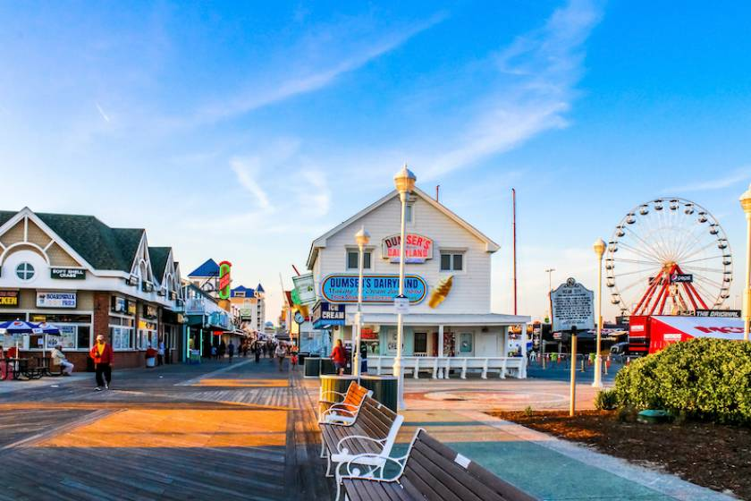

About Scallywags
A pirate-themed seafood experience built for families, tourists, and hungry crews on the Ocean City boardwalk.
The Experience
Scallywags is loud, lively, and packed with pirate spirit. From the moment guests walk through the door, they are met with bold decor, a high-energy atmosphere, and the kind of boardwalk excitement that makes dinner feel like part of the vacation.
The Food
The menu is centered around seafood platters, fried boardwalk favorites, and casual dishes made for sharing. Whether guests are digging into a full table spread or just grabbing something smaller, Scallywags serves food that feels fun, hearty, and built for the whole crew.
Who It’s For
Scallywags is designed for families, tourist groups, friend outings, and anyone looking for a memorable boardwalk meal. It’s the kind of place where kids can have fun, adults can relax, and everybody leaves full.
Visit the Crew
Located right on the Ocean City boardwalk, Scallywags is easy to spot and impossible to forget. Stop in for a casual lunch, a family dinner, or a loud night out with the crew.
Address: Ocean City Boardwalk, Maryland
Phone: (410) 555-7827
Hours
Monday – Thursday: 10:00 AM – 10:00 PM
Friday: 10:00 AM – 12:00 AM
Saturday: 10:00 AM – 12:00 AM (or later for special events 🏴☠️)
Sunday: 10:00 AM – 10:00 PM
